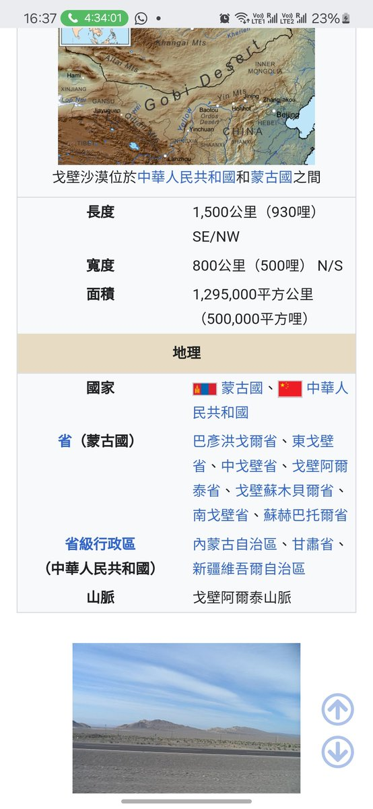

RedFox（2代目）🇲🇴🇭🇰
@FoxRed695449
@tianchen92 @ni_bingbing_jie 我只是說例如啊，又沒說一定是那個沙漠
還是說你的意思是戈壁沙漠都是蒙古的？你這是分裂國家誒

天辰
@tianchen92
@FoxRed695449 @ni_bingbing_jie 塔克拉玛干在新疆，而且是和盆地地势而且不在气压带上，吹不过来。能吹到华北，乃至日本的沙尘暴有且只有可能是从蒙古高原吹过来的。